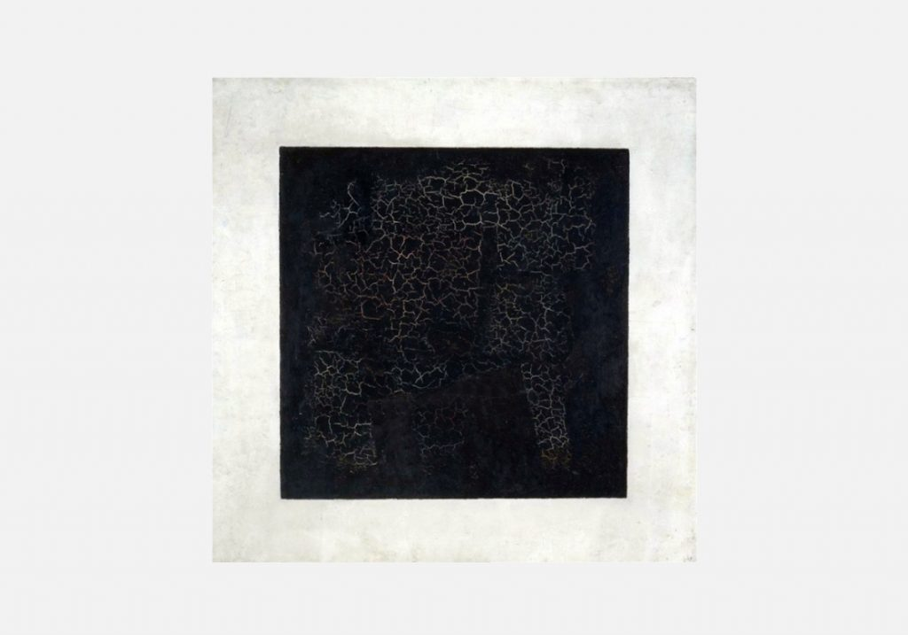

Произведение относится к популярному в эпоху барокко жанру «романа с ключом», породило многочисленные продолжения и подражания и сильно повлияло на развитие французской прециозной литературы (включая романы мадам де Скюдери и «Приключения Телемака» Фенелона). Аллегорико-политические романы на латинском языке публиковались после этого до середины XVIII века.
В латинском оригинале роман выдержал более 50 изданий и регулярно переиздавался вплоть до конца XVIII века, был переведён практически на все европейские языки, включая польский (Вацлав Потоцкий, 1697) и русский (Василий Тредиаковский, 1751). Роман ценили Гуго Гроций, кардинал Ришельё, Готфрид Лейбниц, Иоганн Гёте и Сэмюэл Кольридж. Затем «Аргенида» была на долгое время забыта, научный интерес к тексту проявился в конце XIX века, на рубеже XX—XXI веков было выпущено несколько факсимильных изданий. Научное издание латинского текста с параллельным английским переводом под редакцией Марка Райли и Дороти Замыслив изложить её апологию, он написал аллегорический роман, который
Райли и Дороти Притчард Хьюбер
ритчард Хьюбер последовало в 2004 году.
Барочный роман имел сложный сюжет, основная фабула которого, хотя и помещённая в Античность, была основана на событиях реальной истории Франции XVI века — борьбе короля, гуген
е издание латинского текста с параллельным английским переводом под редакцией Марка Райли и Дороти Притча
XVIII века, был перев
